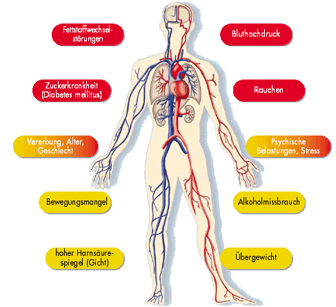

Behandlungsmaßnahmen des Bluthochdrucks sind Reduktion eines erhöhten Körpergewichts, gesunde Ernährung, Bewegung und in den meisten Fällen eine medikamentöse Behandlung.

Wenn diese Risikofaktoren ersten Ranges (rot) und zweiten Ranges (gelb)
zusammenkommen, verändern sie das Blutgefäßsystem.
Tückisch ist, dass Bluthochdruck bei den meisten Menschen keine akuten Beschwerden macht, aber dennoch die oben genannten Organveränderungen mit nachfolgenden, durchaus auch lebensbedrohlichen Krankheiten verursacht. Eine konsequente Therapie ist somit unverzichtbar und muss meist lebenslang durchgeführt werden.